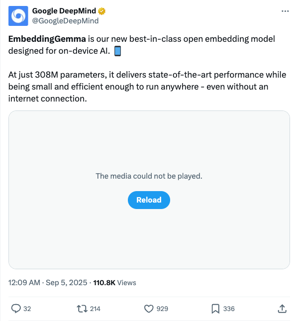
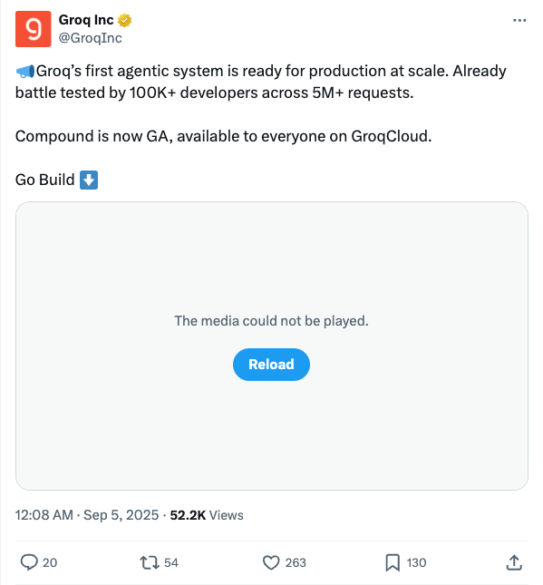
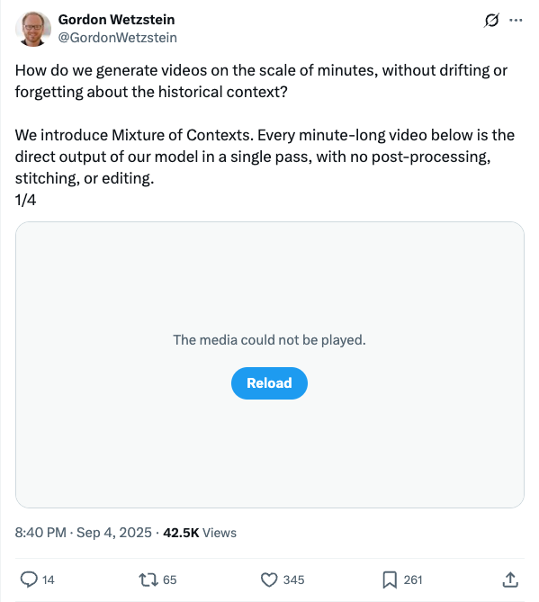
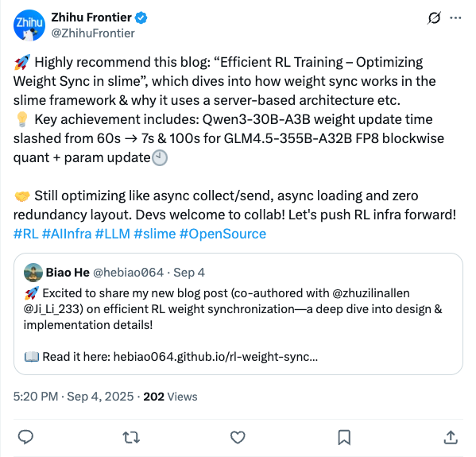
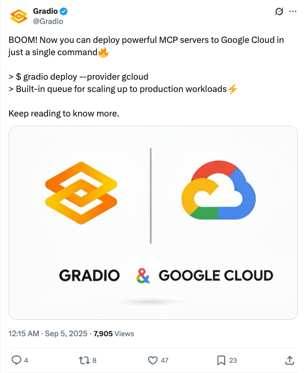
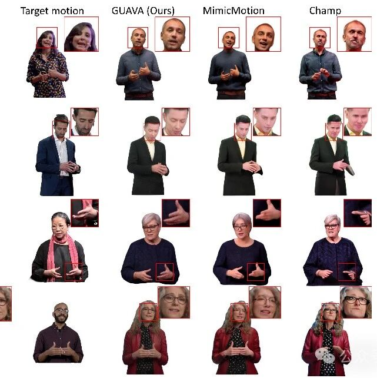
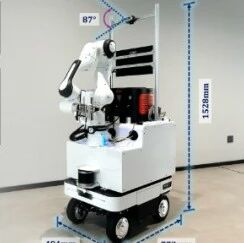
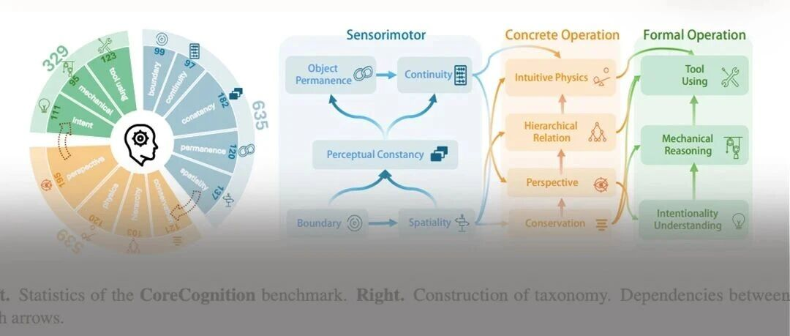
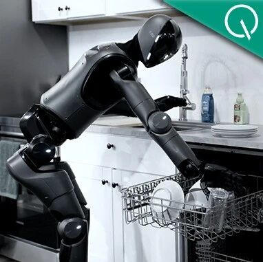
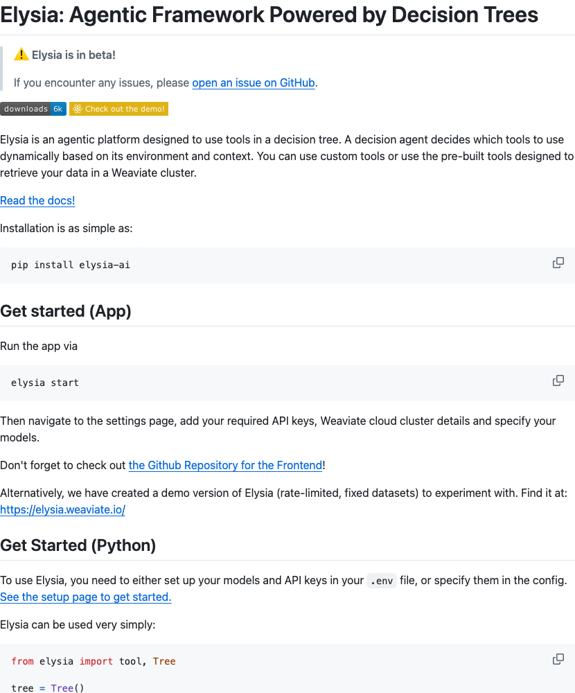

Twitter
GoogleDeepMind Releases Lightweight On-Device AI Embedding Model EmbeddingGemma
Published: 2025-09-04T16:09:02.000Z

Google DeepMind has released its latest and leading open embedding model, EmbeddingGemma, designed specifically for on-device AI. With only 308 million parameters, this model delivers state-of-the-art performance while remaining compact and efficient. It can run without network connectivity, enabling deployment anytime, anywhere.
OpenAI_ChatGPT Adds Conversation Branching Feature
Published: 2025-09-04T20:13:46.000Z
OpenAI has announced a highly anticipated new feature for ChatGPT: conversation branching. This allows users to explore different conversational paths from a specific point without losing the original thread. It provides greater flexibility for pursuing multiple branches or conducting short side-prompt conversations without muddying the main context. The feature is now available to logged-in web users.
GroqInc_Groq's First Agentic System Compound Now Generally Available
Published: 2025-09-04T16:08:10.000Z

Groq Inc. has officially announced that its groundbreaking first agentic system, Compound, is now generally available (GA) for all users on GroqCloud. This robust system has undergone extensive real-world validation, being battle-tested by over 100,000 developers and processing more than 5 million requests, proving its exceptional readiness for production at scale. This significant milestone underscores Groq's commitment to delivering advanced, scalable AI solutions and marks a pivotal moment in the broader commercialization of intelligent agent technology.
GordonWetzstein_Breakthrough in Long Video Generation: Introducing Mixture of Contexts
Published: 2025-09-04T12:40:55.000Z

Gordon Wetzstein's team introduces the "Mixture of Contexts" model, designed to address the challenges of content drift and historical context forgetting in long-duration video generation. This innovative model can directly produce minute-long videos in a single pass, eliminating the need for post-processing, stitching, or editing. This development represents a significant advancement in video generation technology, enabling seamless and coherent video creation.
ZhihuFrontier_Efficient RL Training: Slime Framework Weight Sync Optimization
Published: 2025-09-04T09:20:03.000Z

Zhihu Frontier highly recommends a blog post detailing efficient RL training, specifically optimizing weight synchronization within the slime framework. The post explains its server-based architecture and key achievements, including slashing Qwen3-30B-A3B weight update time from 60s to 7s, and completing GLM4.5-355B-A32B FP8 blockwise quantization and parameter updates in 100s. The team continues to optimize aspects like async collect/send, async loading, and zero redundancy layout to further advance RL infrastructure.
Gradio_Gradio One-Command Deployment of MCP Servers to Google Cloud
Published: 2025-09-04T16:15:07.000Z

Gradio has announced a new feature enabling users to deploy powerful MCP servers to Google Cloud with just a single command. This functionality includes a built-in queue for scaling up to production workloads, significantly simplifying the server deployment process and enhancing efficiency and scalability.
wechat
Tsinghua IDEA's GUAVA Framework Generates Upper-Body 3D Avatars from Single Image in 0.1s, Accepted by ICCV 2025
Published: 2025-09-04T16:01:27.000Z

Tsinghua University and IDEA Research Institute have jointly introduced the GUAVA framework, capable of rapidly generating realistic upper-body 3D avatars from a single image in just 0.1 seconds. This innovative framework has been accepted by ICCV 2025. GUAVA overcomes the limitations of traditional methods that rely on multi-view videos or extensive single-person training, effectively addressing challenges in identity consistency and real-time performance. It innovatively employs 3D Gaussian representation and introduces the Expressive Human Model (EHM) to capture intricate facial expressions. Combined with inverse texture mapping technology, GUAVA significantly enhances rendering quality and efficiency. Experimental results demonstrate that GUAVA surpasses existing 2D and 3D methods in terms of rendering quality, identity preservation, and real-time animation capabilities (achieving 50 FPS). This provides an efficient and high-quality solution for virtual content creation in fields such as film and gaming.
Minute-Level Long Video Generation Ushers in a "Memory Revolution," with 7x Cost Reduction and 2.2x End-to-End Generation Speed Improvement! | Stanford & ByteDance
Published: 2025-09-04T16:01:27.000Z
This paper introduces Mixture of Contexts (MoC), an innovative adaptive, content-aligned context mixing layer designed for long video generation. MoC replaces the dense attention mechanism in Diffusion Transformers (DiT) to mitigate the quadratic computational cost associated with standard self-attention. By implementing a learnable routing strategy, which includes top-k selection and content-aware block partitioning, MoC achieves a remarkable reduction in FLOPs by over 7 times and boosts end-to-end generation speed by 2.2 times for extensive video sequences (e.g., 180k tokens). This enables minute-level video generation at a computational cost comparable to that of short videos. The method demonstrates improved performance, particularly in motion diversity, while preserving overall quality. MoC's ability to learn long-term dependencies directly from data facilitates scalable and controllable long video generation, marking a significant step towards emergent long-term memory capabilities in video synthesis.
Empowering Embodied Agents with Spatial Cognition: Tsinghua and Beihang Universities Introduce Brain-Inspired Framework for Navigation, Reasoning, and Complex Tasks
Published: 2025-09-04T16:01:27.000Z

Tsinghua University and Beihang University have jointly introduced the BSC-Nav framework, aiming to equip embodied agents with brain-inspired spatial cognition, addressing the current bottleneck of AI lacking long-term, structured memory in complex physical environments. Inspired by biological brain spatial memory mechanisms, BSC-Nav integrates Landmark Memory, Cognitive Map, and Working Memory modules with multimodal large models to construct a dynamic and continuously updated spatial memory system. Experimental results demonstrate that BSC-Nav significantly outperforms existing methods across various navigation tasks. It also exhibits robust generalization capabilities in real-world settings, enabling complex instruction understanding, active embodied question answering, and multi-step mobile manipulation tasks such as preparing breakfast. This research underscores that memory, rather than mere computational power, is crucial for the evolution of embodied intelligence from reactive behavior to proactive cognition, offering a new paradigm for the development of general artificial intelligence.
Small Language Models are the Future of Agentic AI
Published: 2025-09-04T10:07:01.000Z
NVIDIA's latest research indicates that most Large Language Model (LLM) applications struggle with profitability and exhibit computational resource mismatch in Agentic AI systems. Their paper, "Small Language Models are the Future of Agentic AI," proposes that Small Language Models (SLMs), defined as having fewer than 10 billion parameters, are better suited as the future core of Agentic AI due to their cost-effectiveness, efficiency, and adaptability to repetitive, convergent tasks. The study reveals that SLMs are 10-30 times cheaper than LLMs in inference efficiency and are easier to fine-tune and deploy on edge devices. NVIDIA's experiments demonstrate that SLMs can reliably handle 40%-70% of query tasks within Agentic AI. The paper also outlines a six-step conversion algorithm for migrating agent systems from LLMs to SLMs, emphasizing SLMs' modularity, flexibility, and cost advantages in Agentic AI. Several high-performing SLMs are recommended.
Core Knowledge Deficits in Multi-Modal Language Models
Published: 2025-09-04T09:26:10.000Z

A high-scoring ICML 2025 paper reveals significant core knowledge deficits in Multi-Modal Language Models (MLLMs), particularly in "child-level" foundational cognitive tasks such as object permanence and conservation. The research, utilizing an innovative evaluation system called CoreCognition and an "intervention test" method named Concept Hacking, systematically demonstrates that mainstream MLLMs widely lack fundamental core cognitive abilities. Crucially, this capability cannot be naturally acquired through simply scaling up model size; in some cases, larger models even exhibit worse performance. This finding poses a fundamental challenge to the current AI development paradigm, which primarily relies on scale expansion, indicating that models have not established a robust cognitive system where advanced reasoning is built upon solid foundational understanding. Future directions suggest explicitly injecting common sense knowledge, such as physics and spatial reasoning, during pre-training, or introducing cognitively-guided training mechanisms to address this core deficiency and advance AI towards general intelligence.
Figure Humanoid Robot Finally Learns to Load Dishwashers
Published: 2025-09-04T04:38:55.000Z

Figure's humanoid robot, Figure 02, has successfully learned to load dishwashers, building upon its previous capabilities in package sorting and towel folding. This new skill was achieved using the same versatile Helix architecture, an end-to-end "vision-language-action" (VLA) model, without requiring new algorithms or specialized engineering. Instead, the robot acquired complex abilities such as separating stacked dishes, delicately handling glassware, adapting to cluttered initial states, and recovering from grasping errors, simply by incorporating new data. This demonstrates the remarkable generality and scalability of the Helix architecture, highlighting its potential to progressively learn a wide range of new tasks through data-driven training within a single system. This achievement marks a significant stride for Figure towards realizing scalable humanoid intelligence, showcasing a unified model's ability to perform diverse household chores with human-like dexterity and adaptability.
GitHub
Bytebot: Open-Source AI Desktop Agent
Published: 2025-09-05T00:24:02Z

Bytebot is an open-source AI desktop agent designed to empower AI with its own complete virtual computer, allowing it to interact with a desktop environment just like a human. This innovative agent can seamlessly utilize any application, manage files, securely log into websites, process diverse documents, and execute intricate multi-step workflows across various programs. Its architecture integrates a virtual desktop, an intelligent AI agent, a user-friendly task interface, and robust APIs. Bytebot supports leading AI providers such as Anthropic, OpenAI, and Google Gemini, and is easily deployable via Docker containers, offering unparalleled data privacy, full control, and customization for users. It is ideally suited for automating business processes, streamlining development and testing, and enhancing research and analysis tasks.
Fast and Flexible Multi-Agent Automation Framework
Published: 2025-09-04T19:32:47Z

CrewAI is a lean, lightning-fast Python framework built for multi-AI agent orchestration, entirely independent of other frameworks like LangChain. It empowers developers to create highly autonomous yet precisely controllable AI agents through its core mechanisms: CrewAI Crews, which optimize for collaborative intelligence and autonomy, and CrewAI Flows, enabling granular, event-driven control. The framework supports enterprise-grade applications with features like real-time tracing, observability, a unified control plane, and advanced security. Designed to transform complex business processes into efficient, intelligent automations, CrewAI is backed by a robust community of over 100,000 certified developers.
TensorZero
Published: 2025-09-04T21:57:36Z
TensorZero is an open-source stack engineered for industrial-grade LLM applications. It features a unified LLM gateway, enabling low-latency access to major LLM providers. The platform integrates comprehensive observability, optimization, evaluation, and experimentation capabilities. It supports collecting production metrics, incorporating human feedback, fine-tuning models, advanced prompt engineering, and A/B testing. Designed for high performance and scalability, TensorZero empowers developers to build, deploy, and continuously optimize robust LLM applications, ensuring reliability and efficiency in production environments.
Elysia: Agentic Framework Powered by Decision Trees
Published: 2025-09-03T10:58:24Z

Elysia is an agentic framework powered by decision trees, designed to dynamically utilize tools based on environmental context. It supports both custom tools and pre-built integrations for efficient data retrieval from Weaviate databases. The platform offers a Python API and a web application interface, allowing users to easily configure API keys and models. Elysia is suitable for developing AI applications such as intelligent search, data analysis, and customized workflows.
Machine Learning From Scratch
Published: 2019-10-18T21:42:16Z

This GitHub repository offers Python implementations of fundamental machine learning models and algorithms from scratch. Its primary goal is to transparently and accessibly illustrate their inner workings, rather than focusing on computational efficiency. The project spans various machine learning paradigms, including supervised learning, unsupervised learning, reinforcement learning, and deep learning, featuring classic algorithms like linear regression, decision trees, K-Means, GANs, and DQNs. With numerous practical examples such as polynomial regression, CNN-based image classification, DBSCAN clustering, and generative adversarial networks for handwritten digit generation, this repository serves as an excellent practical platform for learners to deeply understand core machine learning concepts.
huggingface
Open Data Synthesis For Deep Research
Published: 2025-08-30T06:02:56.000Z

Large language models (LLMs) are increasingly expected to go beyond simple
factual queries toward Deep Research-tasks that require decomposing questions
into sub-problems, coordinating multi-step reasoning, and synthesizing evidence
from diverse sources. We formalize Deep Research tasks with verifiable answers
as Hierarchical Constraint Satisfaction Problems (HCSPs), which are
fundamentally different from single-constraint, multi-hop, or flat CSP
formulations. However, existing benchmarks (e.g., Natural Questions, HotpotQA)
fail to capture this complexity, while recent synthetic datasets often
introduce shortcut reasoning, knowledge leakage, or lack sufficient structural
depth. To address this gap, we introduce InfoSeek, a scalable framework for
synthesizing complex Deep Research tasks. InfoSeek uses a dual-agent system to
recursively build a Research Tree from large-scale webpages, blurring
intermediate nodes into valid sub-problems, and converting these trees into
natural language questions that require traversing the full hierarchy. It also
enables rapid scaling, yielding over 50K training examples, a curated test set,
and reasoning trajectories generated via reject sampling. Experiments show that
models trained on InfoSeek consistently outperform strong baselines. On a
challenging benchmark BrowseComp-Plus, 3B LLMs optimized with InfoSeek surpass
much larger 32B models and lightweight commercial APIs (e.g., Gemini2.5-Flash),
while achieving performance comparable to stronger APIs (e.g., Gemini2.5-Pro).
By preserving meta-information such as intermediate steps and retrieval labels,
InfoSeek further supports advanced optimization strategies, including compound
reward design and trajectory-level exploration. We provide our codes and
datasets in https://github.com/VectorSpaceLab/InfoSeek{this repository}.
Robix: A Unified Model for Robot Interaction, Reasoning and Planning
Published: 2025-09-01T03:53:47.000Z

We introduce Robix, a unified model that integrates robot reasoning, task
planning, and natural language interaction within a single vision-language
architecture. Acting as the high-level cognitive layer in a hierarchical robot
system, Robix dynamically generates atomic commands for the low-level
controller and verbal responses for human interaction, enabling robots to
follow complex instructions, plan long-horizon tasks, and interact naturally
with human within an end-to-end framework. Robix further introduces novel
capabilities such as proactive dialogue, real-time interruption handling, and
context-aware commonsense reasoning during task execution. At its core, Robix
leverages chain-of-thought reasoning and adopts a three-stage training
strategy: (1) continued pretraining to enhance foundational embodied reasoning
abilities including 3D spatial understanding, visual grounding, and
task-centric reasoning; (2) supervised finetuning to model human-robot
interaction and task planning as a unified reasoning-action sequence; and (3)
reinforcement learning to improve reasoning-action consistency and long-horizon
task coherence. Extensive experiments demonstrate that Robix outperforms both
open-source and commercial baselines (e.g., GPT-4o and Gemini 2.5 Pro) in
interactive task execution, demonstrating strong generalization across diverse
instruction types (e.g., open-ended, multi-stage, constrained, invalid, and
interrupted) and various user-involved tasks such as table bussing, grocery
shopping, and dietary filtering.
LMEnt: A Suite for Analyzing Knowledge in Language Models from
Pretraining Data to Representations
Published: 2025-09-03T15:31:18.000Z

Language models (LMs) increasingly drive real-world applications that require
world knowledge. However, the internal processes through which models turn data
into representations of knowledge and beliefs about the world, are poorly
understood. Insights into these processes could pave the way for developing LMs
with knowledge representations that are more consistent, robust, and complete.
To facilitate studying these questions, we present LMEnt, a suite for analyzing
knowledge acquisition in LMs during pretraining. LMEnt introduces: (1) a
knowledge-rich pretraining corpus, fully annotated with entity mentions, based
on Wikipedia, (2) an entity-based retrieval method over pretraining data that
outperforms previous approaches by as much as 80.4%, and (3) 12 pretrained
models with up to 1B parameters and 4K intermediate checkpoints, with
comparable performance to popular open-sourced models on knowledge benchmarks.
Together, these resources provide a controlled environment for analyzing
connections between entity mentions in pretraining and downstream performance,
and the effects of causal interventions in pretraining data. We show the
utility of LMEnt by studying knowledge acquisition across checkpoints, finding
that fact frequency is key, but does not fully explain learning trends. We
release LMEnt to support studies of knowledge in LMs, including knowledge
representations, plasticity, editing, attribution, and learning dynamics.
Beyond Correctness: Harmonizing Process and Outcome Rewards through RL
Training
Published: 2025-09-03T15:28:51.000Z

Reinforcement learning with verifiable rewards (RLVR) has emerged to be a
predominant paradigm for mathematical reasoning tasks, offering stable
improvements in reasoning ability. However, Outcome Reward Models (ORMs) in
RLVR are too coarse-grained to distinguish flawed reasoning within correct
answers or valid reasoning within incorrect answers. This lack of granularity
introduces noisy and misleading gradients significantly and hinders further
progress in reasoning process quality. While Process Reward Models (PRMs) offer
fine-grained guidance for intermediate steps, they frequently suffer from
inaccuracies and are susceptible to reward hacking.
To resolve this dilemma, we introduce PRocess cOnsistency Filter (PROF), an
effective data process curation method that harmonizes noisy, fine-grained
process rewards with accurate, coarse-grained outcome rewards. Rather than
naively blending PRM and ORM in the objective function
(arXiv:archive/2506.18896), PROF leverages their complementary strengths
through consistency-driven sample selection. Our approach retains correct
responses with higher averaged process values and incorrect responses with
lower averaged process values, while maintaining positive/negative training
sample balance. Extensive experiments demonstrate that our method not only
consistently improves the final accuracy over 4% compared to the blending
approaches, but also strengthens the quality of intermediate reasoning steps.
Codes and training recipes are available at https://github.com/Chenluye99/PROF.
Planning with Reasoning using Vision Language World Model
Published: 2025-09-02T18:18:57.000Z

Effective planning requires strong world models, but high-level world models
that can understand and reason about actions with semantic and temporal
abstraction remain largely underdeveloped. We introduce the Vision Language
World Model (VLWM), a foundation model trained for language-based world
modeling on natural videos. Given visual observations, the VLWM first infers
the overall goal achievements then predicts a trajectory composed of
interleaved actions and world state changes. Those targets are extracted by
iterative LLM Self-Refine conditioned on compressed future observations
represented by Tree of Captions. The VLWM learns both an action policy and a
dynamics model, which respectively facilitates reactive system-1 plan decoding
and reflective system-2 planning via cost minimization. The cost evaluates the
semantic distance between the hypothetical future states given by VLWM
roll-outs and the expected goal state, and is measured by a critic model that
we trained in a self-supervised manner. The VLWM achieves state-of-the-art
Visual Planning for Assistance (VPA) performance on both benchmark evaluations
and our proposed PlannerArena human evaluations, where system-2 improves the
Elo score by +27% upon system-1. The VLWM models also outperforms strong VLM
baselines on RoboVQA and WorldPrediction benchmark.
MOSAIC: Multi-Subject Personalized Generation via Correspondence-Aware
Alignment and Disentanglement
Published: 2025-09-02T05:40:07.000Z

Multi-subject personalized generation presents unique challenges in
maintaining identity fidelity and semantic coherence when synthesizing images
conditioned on multiple reference subjects. Existing methods often suffer from
identity blending and attribute leakage due to inadequate modeling of how
different subjects should interact within shared representation spaces. We
present MOSAIC, a representation-centric framework that rethinks multi-subject
generation through explicit semantic correspondence and orthogonal feature
disentanglement. Our key insight is that multi-subject generation requires
precise semantic alignment at the representation level - knowing exactly which
regions in the generated image should attend to which parts of each reference.
To enable this, we introduce SemAlign-MS, a meticulously annotated dataset
providing fine-grained semantic correspondences between multiple reference
subjects and target images, previously unavailable in this domain. Building on
this foundation, we propose the semantic correspondence attention loss to
enforce precise point-to-point semantic alignment, ensuring high consistency
from each reference to its designated regions. Furthermore, we develop the
multi-reference disentanglement loss to push different subjects into orthogonal
attention subspaces, preventing feature interference while preserving
individual identity characteristics. Extensive experiments demonstrate that
MOSAIC achieves state-of-the-art performance on multiple benchmarks. Notably,
while existing methods typically degrade beyond 3 subjects, MOSAIC maintains
high fidelity with 4+ reference subjects, opening new possibilities for complex
multi-subject synthesis applications.